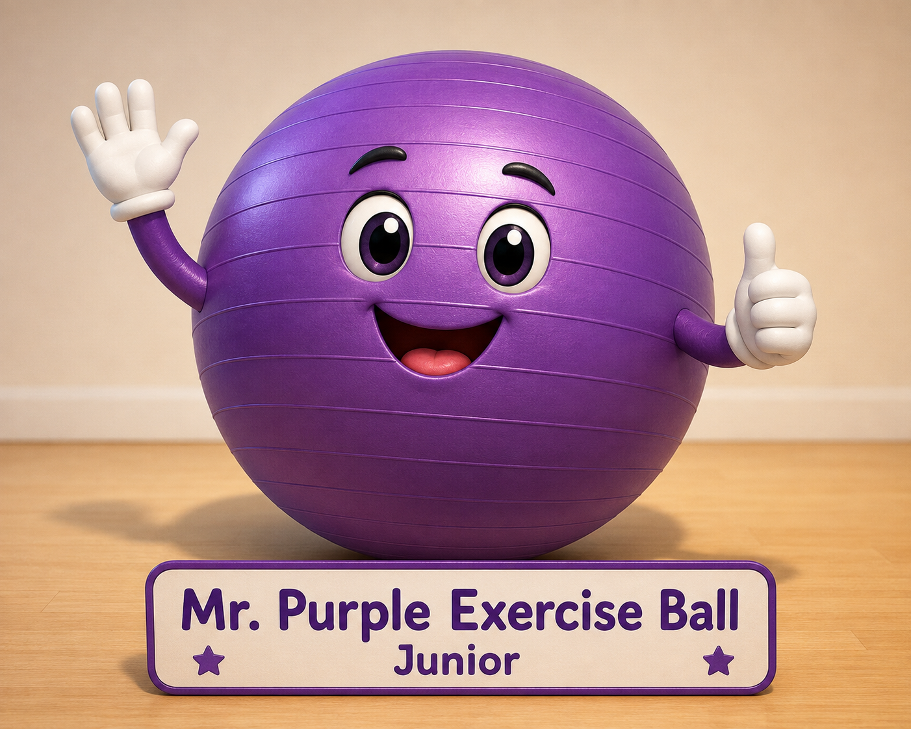

🟣 Case File #002: Where Is Mr. Purple Exercise Ball Junior?
It was a bright Saturday morning in Harmony House.
Today was hand exercise day.
Everyone was ready.
...
Everyone...
Except Mr. Purple Exercise Ball Junior.
Junior was nowhere to be found.

"Has anyone seen Junior?"
Everyone looked around.
Nobody answered.
The mystery had begun.
🕵️ Chief Inspector Arrives
A few minutes later, Chief Inspector Dr. Z arrived carrying the HHIB notebook.
"Good morning, detectives."
"Who reported the missing exercise ball?"
"I did."
"Junior was supposed to be here for our hand exercise."
"But he has disappeared."
"Remember our first detective rule."
"We never guess."
"We collect clues."
🎨 Visiting Mr. Paint Bucket
The detective team walked to the Office Complex on the second floor.
Near the entrance to Closet Forest stood Mr. Paint Bucket.
Mr. Paint Bucket was only supposed to visit Harmony House for a few days while some painting was being done.
But somehow...
He never went back home.
Months passed.
Everyone joked that Mr. Paint Bucket had become a permanent resident of Closet Forest in the Office Complex.
Mr. Paint Bucket simply smiled.
"Good morning, Mr. Paint Bucket."
"Have you seen Mr. Purple Exercise Ball Junior?"
"I saw him yesterday."
"He was happily rolling through Closet Forest."
"After that..."
"I'm not sure."
Dr. Z wrote another note.
Last Seen: Closet Forest, Office Complex.
📦 Meeting Mr. Plastic Box
Next they visited Mr. Plastic Box.
Mr. Plastic Box knew almost everyone in the Office Complex.
"Perhaps you can help us."
"I know many families."
"The Pencil Family."
"The Highlighter Family."
"The Paper Clip Family."
"The Sticky Note Family."
"The Eraser Family."
"The Marker Family."
"Did any of them see Junior?"
"Not that I know of."
"But I'll ask everyone."
🪣 A Curious Clue
Just then...
Mr. Paint Bucket looked inside himself.
"Hmmm..."
"I think I remember seeing something purple."
Everyone became excited.
"Was it Junior?"
"I'm not sure."
"It may have been paint..."
"...or perhaps just a reflection."
Nobody knew.
🌟 Detective Lesson
"A clue is not always an answer."
"Sometimes a clue creates another question."
"Good detectives stay patient."
🕵️ Your Turn!
Where do you think Mr. Purple Exercise Ball Junior is?
- Did he roll deeper into Closet Forest?
- Did he accidentally fall into Mr. Paint Bucket?
- Did one of the Office Families see him?
- Or do you have another detective theory?
Draw your idea and help HHIB solve Case File #002!
📂 HHIB Case File #002
Missing: Mr. Purple Exercise Ball Junior
Last Seen: Closet Forest, Office Complex, Harmony House (Second Floor)
Witnesses:
- Ms. Mitt
- Mr. Paint Bucket
- Mr. Plastic Box
Possible Clue:
Something purple may have been inside Mr. Paint Bucket.
Status: 🟡 OPEN